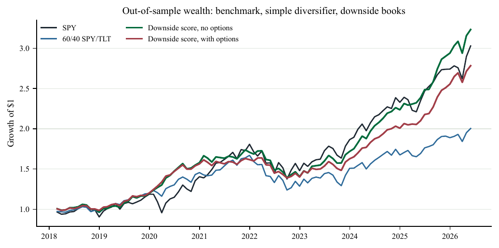
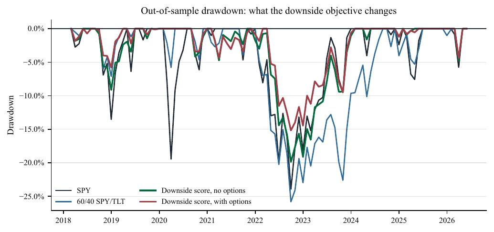
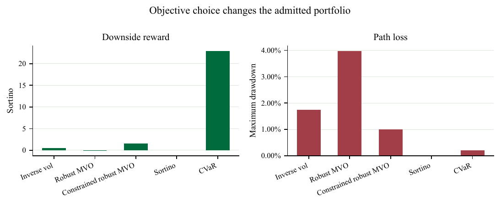

Working Paper
Cross-Asset Portfolio Construction as Cashflow Engineering
This paper studies cross-asset allocation as domestic cashflow engineering. Starting from SPY exposure, it asks whether stocks inside the index, gold, copper, VIX futures, Treasuries, and SPY options improve the book after funding, transaction costs, option premia, drawdowns, and tail losses are charged.
The empirical design builds a daily execution panel and aggregates executed P&L to the monthly evaluation horizon. In this sample and under these conventions, downside-aware cross-asset allocation improves the tested SPY path. Option convexity is useful only conditionally after premium, skew, hedge cost, execution cost, and realized state are considered. Machine-learning forecasts are treated as uncertain inputs, not automatic trades.
Reproduction
python -m xasset_portfolio.run --config configs/base.yml
python scripts/paper_qa.py
python -m pytestResearch paper only. The results are not investment advice, a live trading claim, or evidence of production trading performance.
Selected Figures
Primary diagnostics from the final paper build.


